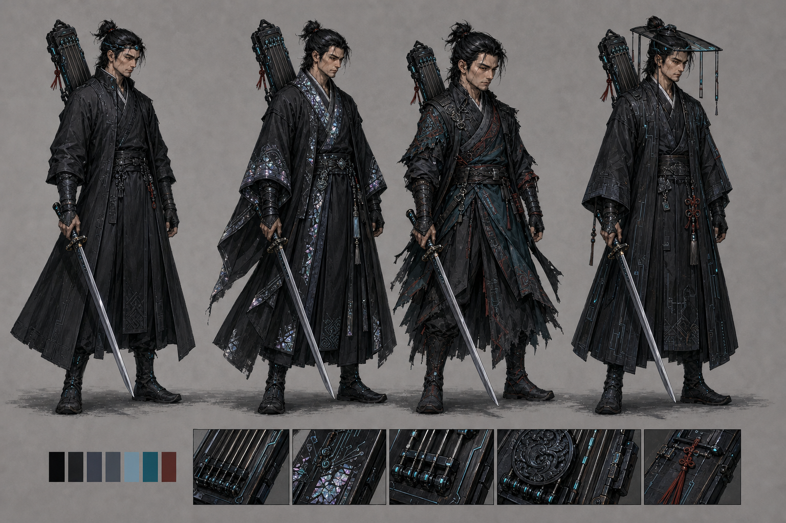

주인공 컨셉 — 사이버펑크 조선
Phase 11-A APPROVED4종 탐색안 가운데 왼쪽 두 번째 ‘나전 음공가’를 정식 디자인으로 확정했다. 검은 도포, 나전칠기 회로, 6현 사이버 거문고 음현이 후속 아이들·이동·공격 스프라이트의 기준이다.

4종 탐색안 가운데 왼쪽 두 번째 ‘나전 음공가’를 정식 디자인으로 확정했다. 검은 도포, 나전칠기 회로, 6현 사이버 거문고 음현이 후속 아이들·이동·공격 스프라이트의 기준이다.
